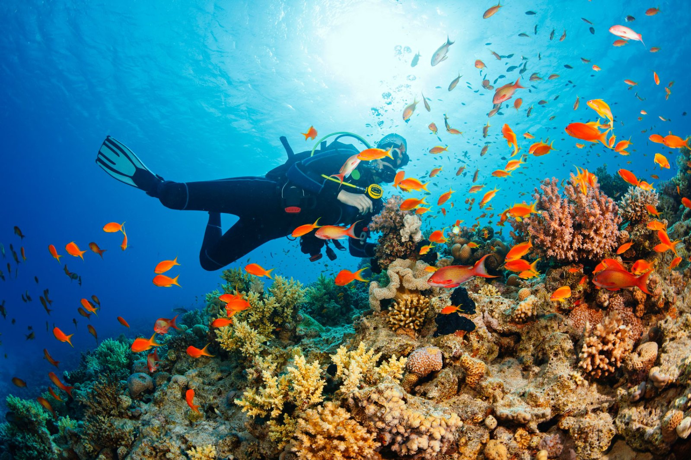
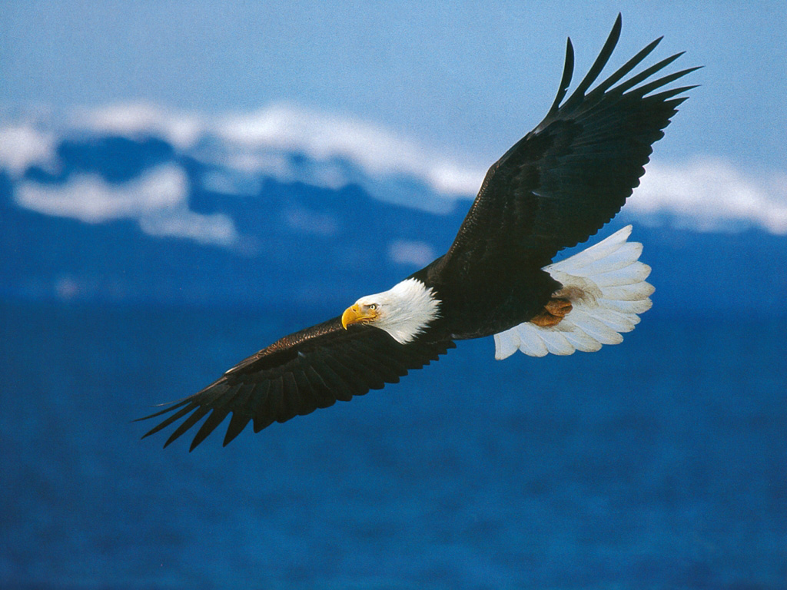

Дайвинг
Слово «дайвинг» появилось в русской речи не так давно, но уже прочно вошло в обиход тех людей, кто при выборе направления путешествия отдает предпочтение островам и прибрежным городам. В переводе с английского diving означает «ныряние». Волна моды на этот вид спорта хлынула на Россию всего несколько десятилетий назад, однако первые ныряльщики были известны еще во времена Геродота, а в зарубежных странах дайвинг появился в 50-х годах прошлого века. Общественный интерес к подводному плаванию возник благодаря известному путешественнику Жаку Иву Кусто, который в 1943 году изобрел акваланг, а в 1953 году опубликовал в журнале National Geographic увлекательную статью о подводной археологии. Именно этой статье человечество обязано массовым спросом на подводное снаряжение, которое в те годы производители Франции и Америки едва успевали поставлять на прилавки магазинов. Постепенно на берегах морей и океанов стали открывать дайв-клубы, с помощью которых и сегодня любой желающий может познакомиться с подводными обитателями.Что такое дайвинг?
Можно сказать, данное занятие открывает ныряльщику новый прекрасный мир. Он тысячелетиями находился рядом с людьми и ждал, пока его откроют. Впрочем, даже на текущий момент развития технологий, мы очень мало о нем знаем. Ныряльщику открылись лишь некоторые его тайны. А другие продолжают манить, мотивируя тысячи водолазов к исследованию океанских глубин. Дайвинг – это и яркие впечатления в путешествиях, и знакомство с единомышленниками, и незабываемые ощущения при погружении, и активный отдых.Пожалуй, самая поразительная возможность, которую он предоставляет ныряльщику, – это ощущение почти полной невесомости и абсолютная свобода передвижения. На суше мы можем передвигаться назад, вперед, влево и вправо, а при нырянии еще добавляется вверх-вниз. Подобное можно испытать только в космосе, где гравитация не властна над человеком. Данный вид отдыха очень активно развивается. Создано множество курсов, где можно пройти обучение дайвингу. Там расскажут обо всех строгих правилах и требованиях, обеспечивающих безопасность ныряльщика.И ими нельзя пренебрегать! Некоторым кажется, что дайвингом занимаются без всякой подготовки, но это иллюзия. Естественно, можно нырнуть самостоятельно без прохождения специального обучения. Но в данном случае поведение на глубине и дальнейший процесс всплытия может закончиться трагедией. Это как с машиной – никто не садится сразу за руль после ее покупки. Сначала обучение в автошколе, а уже потом покорение автомагистралей. Но не переживайте насчет потраченного времени и усилий. Они стократно окупятся.